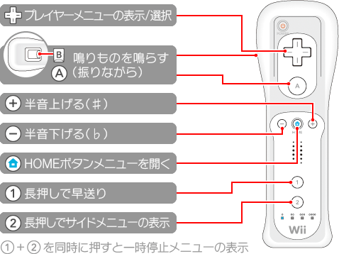

9 |
操作方法 |
 |
1PのWiiリモコンを使い画面上のポインターを移動して、選びたいボタンなどをポイントして
また 操作を取り止めたり、前の画面に戻るときには
本ソフトではカラオケ演奏中に、プレイヤーメニューを呼び出して曲のキーを変更したり、サイドメニューを呼び出して曲を探して予約することなどができます。

またWiiリモコンのボタン操作で、直接曲のキーを変えたり、早送りをすることができます。 なおメニューを操作したり、曲のキーを変えたりすることができるのは１PのWiiリモコンのみです。１P以外のWiiリモコンでは鳴りものを鳴らすことができます。
|
 |
 |
 |